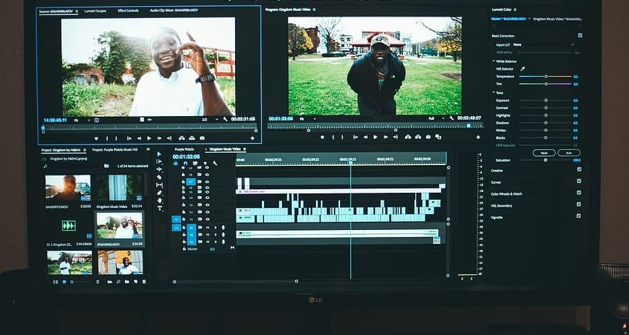
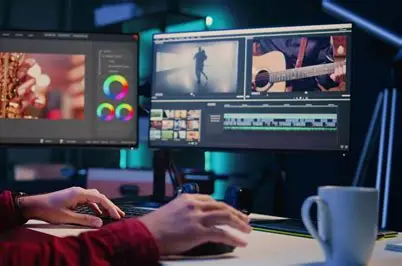
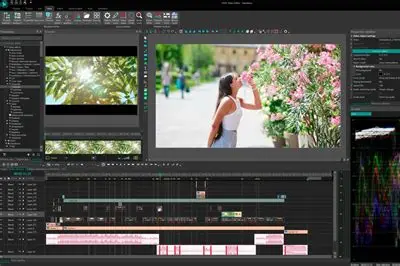

Video editing is the process of manipulating and rearranging video footage to create a new work. It involves cutting, trimming, and arranging video clips, adding transitions, effects, and audio to enhance the visual storytelling. Video editors use various software tools to edit and enhance videos for different purposes, such as films, commercials, social media content, and more.

Whether you're interested in learning the basics of video editing or want to enhance your skills, there are many resources available online. You can find tutorials, courses, and communities that can help you get started and improve your video editing abilities. Video editing is a valuable skill that can open up opportunities in various industries, including film production, advertising, social media marketing, and more.
Join the Skill Swap community today and start exchanging skills with fellow students! Whether you want to learn programming, improve your math skills, or explore graphic design, Skill Swap is the place to connect and grow together.
For more information on video editing, you can explore online platforms such as Adobe Premiere Pro, Final Cut Pro, and DaVinci Resolve. These tools offer a wide range of features and capabilities to help you edit and enhance your videos for various purposes.
Remember, practice is key to becoming proficient in video editing. Experiment with different techniques, styles, and software to find your unique editing approach. Don't be afraid to seek feedback from others and continuously improve your skills. With dedication and creativity, you can become a skilled video editor and create impactful visual content.

Video editing is a dynamic and ever-evolving field that offers endless opportunities for creativity and self-expression. Whether you're editing a short film, creating social media content, or producing a commercial, video editing allows you to tell stories visually and make a lasting impression. So, dive into the world of video editing and unleash your creativity!
Video editing is not just about cutting and arranging clips; it's about storytelling and creating an emotional connection with the audience. Great video editing can enhance the narrative, evoke emotions, and create a memorable viewing experience.
Video editing and filmmaking often go hand in hand, but they serve different roles. Video editing focuses on the post-production process of assembling and enhancing footage, while filmmaking encompasses the entire process of creating a film, from pre-production to post-production. Both video editing and filmmaking require creativity, technical skills, and a passion for storytelling.
